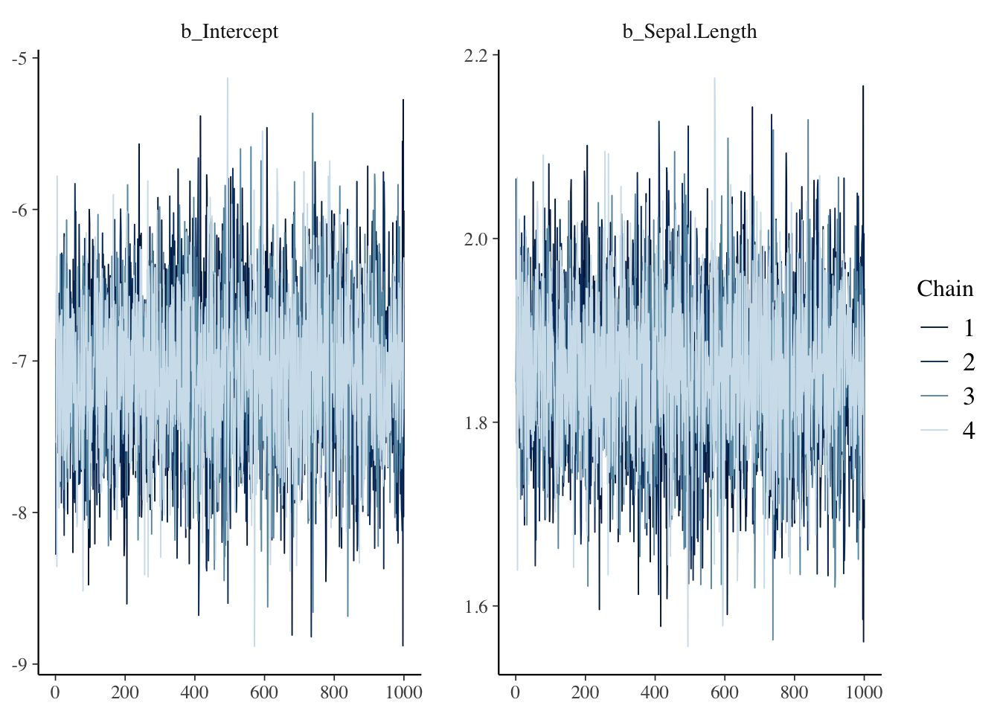
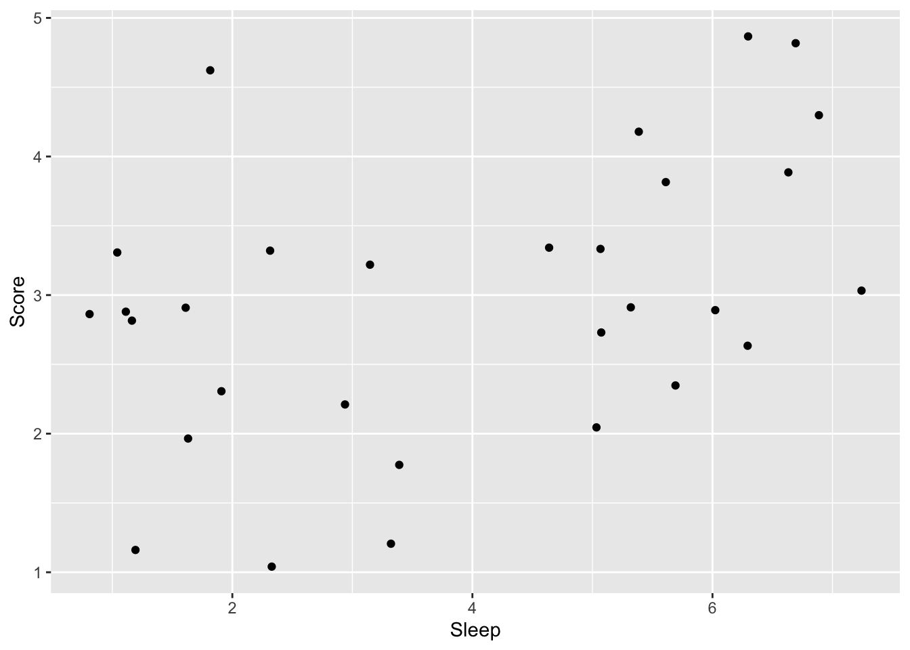
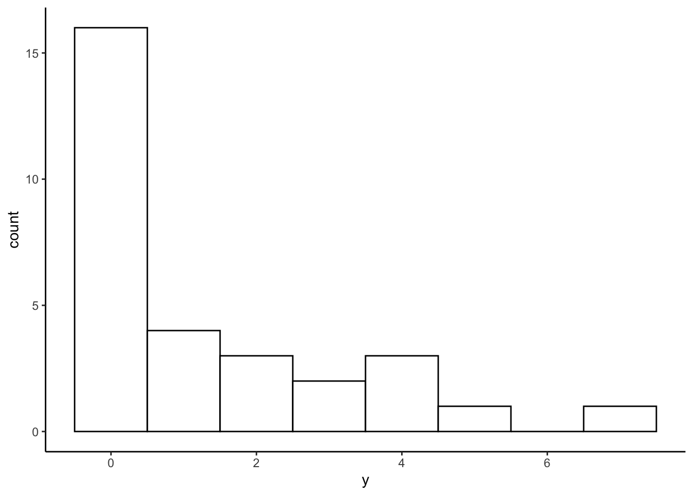

Chapter 12 一般化線形モデルの応用
前の章では、代表的な一般化線形モデルとして、ロジスティック回帰とポアソン回帰を学んだ。この章では、一般化線形モデルを応用したその他の解析法について説明する。
- 負の二項回帰（過分散対策）
- 順序ロジスティック回帰
- 多項ロジスティック回帰
12.1 準備
可視化のためのggplot2パッケージに加え、MASS、ordinal、nnetパッケージを使う。
MASSパッケージは負の二項分布を用いたモデルのときに、ordinalパッケージは順序ロジスティック回帰のときに、nnetパッケージは多項ロジスティック回帰のときに必要になる。初めて使う際には、事前にインストールが必要なので注意。
12.2 負の二項回帰
前の章で、応答変数がカウントデータの場合、ポアソン回帰で解析するのが適切であると学んだ。しかし、実際のデータは分散が平均よりも大きい場合が多く、平均と分散が等しいという前提のポアソン分布を用いると予測変数の効果を誤って判断してしまう恐れがある。これが、過分散（overdispersion）と呼ばれる問題である。
過分散対策として、応答変数が従う分布としてポアソン分布の代わりに、負の二項分布(negative binomial distribution)を用いる方法がよく使われる。
12.2.1 負の二項分布
例えばコインを投げて表が出る確率を0.5として、表が3回出るまで投げると決めたとする。8回投げたところで表が3回出た場合、表が3回出る確率は以下から求めることができる。
## [1] 0.08203125これを一般化した式が以下である。成功確率を\(q\)、成功回数を\(r\)、全試行数（成功回数+失敗回数）を\(n\)とした場合の確率\(P(n)\)を表している。（上の例の場合は、\(q=0.5\), \(r=3\), \(n=8\)である）
\[ P(n) = {}_{n-1}\mathrm{C}_{r-1} q^{r}(1-q)^{n-r} \] 失敗回数を\(x\)として、以下のように置き換えることもできる。ある事象が\(r\)回生じるまでに、\(x\)回失敗する確率と言い換えることができる。この確率分布を負の二項分布という。
\[ P(x) = {}_{x+r-1}\mathrm{C}_{r-1} q^{r}(1-q)^{x} \]
Rでもnbinomで負の二項分布の確率を計算することができる。
x = 0:10
p_y = dnbinom(x = x, size = 3, prob = 0.5) #x = 失敗回数, size = 成功回数, prob = 成功確率
d_plot = data.frame(x = x, p_y = p_y)
ggplot2::ggplot() +
ggplot2::geom_bar(data = d_plot, aes(x = factor(x), y = p_y), stat = "identity") +
ggplot2::labs(x = "number of failures", y = "probability", title = "number of success = 3")
期待値\(E(x)\)と分散\(Var(x)\)は、以下から計算される。
\[ E(x) = \frac{r(1-q)}{q}\\ Var(x) = \frac{r(1-q)}{q^2}\\ \]
dnbinom()に期待値muを入力しても、確率を計算してくれる。
## [1] 0.125000000 0.187500000 0.187500000 0.156250000 0.117187500 0.082031250
## [7] 0.054687500 0.035156250 0.021972656 0.013427734 0.008056641## [1] 0.125000000 0.187500000 0.187500000 0.156250000 0.117187500 0.082031250
## [7] 0.054687500 0.035156250 0.021972656 0.013427734 0.008056641期待値を\(E(x)=\mu\)とすると、分散は\(Var(x)=\mu + \mu^{2}/r\)で、分散が期待値（平均）よりも\(\mu^{2}/r\)大きい。負の二項分布によって、分散が平均よりも大きい分布を扱うことができる。
12.2.2 Rでの負の二項回帰
Rでは、MASSパッケージに含まれているglm.nb()関数で、負の二項回帰を扱うことができる。Rに入っているwarpbreaksをサンプルデータとして、ポアソン回帰と負の二項回帰の結果を比較してみよう。
## breaks wool tension A
## 1 26 A L 1
## 2 30 A L 1
## 3 54 A L 1
## 4 25 A L 1
## 5 70 A L 1
## 6 52 A L 1
breaksに対するwool(A or
B)の効果を検討する。まずは、ポアソン回帰の結果を見てみる。breaksを\(y\)、Aを\(x\)とすると、モデルは以下のように表現できる。
\[ \lambda = \alpha + \beta x\\ y \sim \text{Poisson}(\lambda) \]
model_poisson = glm(data = d, breaks ~ 1 + A, family = poisson(link = "log"))
summary(model_poisson)##
## Call:
## glm(formula = breaks ~ 1 + A, family = poisson(link = "log"),
## data = d)
##
## Coefficients:
## Estimate Std. Error z value Pr(>|z|)
## (Intercept) 3.22919 0.03829 84.331 < 2e-16 ***
## A 0.20599 0.05157 3.994 6.49e-05 ***
## ---
## Signif. codes: 0 '***' 0.001 '**' 0.01 '*' 0.05 '.' 0.1 ' ' 1
##
## (Dispersion parameter for poisson family taken to be 1)
##
## Null deviance: 297.37 on 53 degrees of freedom
## Residual deviance: 281.33 on 52 degrees of freedom
## AIC: 560
##
## Number of Fisher Scoring iterations: 4## [1] 28.14815## [1] 174.2041Aに係る傾きの推定値について、かなり小さいp値が推定されている。
次に、負の二項回帰の結果と比較してみよう。
\[ \mu = \alpha + \beta x\\ y \sim \text{NegativeBinom}(\mu, r) \]
MASSパッケージのglm.nb()を使う。
model_nb = MASS::glm.nb(data = d, breaks ~ 1 + A) #lm関数と同じ要領で、線形の式を入力する。確率分布はオプションで指定しないで良い。
summary(model_nb)##
## Call:
## MASS::glm.nb(formula = breaks ~ 1 + A, data = d, init.theta = 6.960797279,
## link = log)
##
## Coefficients:
## Estimate Std. Error z value Pr(>|z|)
## (Intercept) 3.22919 0.08238 39.197 <2e-16 ***
## A 0.20599 0.11533 1.786 0.0741 .
## ---
## Signif. codes: 0 '***' 0.001 '**' 0.01 '*' 0.05 '.' 0.1 ' ' 1
##
## (Dispersion parameter for Negative Binomial(6.9608) family taken to be 1)
##
## Null deviance: 57.400 on 53 degrees of freedom
## Residual deviance: 54.212 on 52 degrees of freedom
## AIC: 419.97
##
## Number of Fisher Scoring iterations: 1
##
##
## Theta: 6.96
## Std. Err.: 1.63
##
## 2 x log-likelihood: -413.975ポアソン回帰と比べるとAのp値が大きくなり、過分散が解消されたことがうかがえる。
12.3 順序ロジスティック回帰
「優、良、可」といった成績や「1=当てはまらない、…, 5 = 当てはまる」といったリッカート尺度といった順序尺度はカテゴリカル変数であるので、正規分布に従う前提を置くなど量的変数のように扱うのは本来は適切ではない。二値のカテゴリカル変数の場合は二項分布を用いるロジスティック回帰で検討できたが、3つ以上のカテゴリを持つ変数の場合はどうすればよいか？
応答変数が順序尺度である場合は、順序ロジスティック回帰(ordered logistic regression)が適切なモデルとされる。
12.3.1 例題
例えば、Scoreを試験の成績を意味する順序尺度として「1=不可、2=可、3=良、4=優、5=秀」の値を取るとする。この成績Scoreに対して、試験前日の睡眠時間Sleepが及ぼす影響を検討するとしよう。
###サンプルデータの作成
Sleep = c(6,1,5,2,5,6,2,6,2,5,6,2,5,3,5,3,3,7,2,7,6,1,2,1,7,1,1,7,5,3)
Score = c(3,3,3,2,3,3,5,5,2,2,2,3,4,1,3,2,3,5,1,4,4,3,3,3,4,1,3,3,3,2)
sample_ordered = data.frame(Score = Score, Sleep = Sleep)
head(sample_ordered)## Score Sleep
## 1 3 6
## 2 3 1
## 3 3 5
## 4 2 2
## 5 3 5
## 6 3 6
12.3.2 順序ロジスティック回帰モデルの詳細
累積確率と累積ロジット
順序のあるカテゴリカル変数を扱う場合には、累積確率（cumulative probability）で各変数が生じる確率を表現する。累積確率とは、順序変数のある値以下が生じる確率のことをいう。例えば、\(y\)が\(k\)以下の値を取る累積確率を\(Pr(y≤k)\)と表現する。 カテゴリ\(k\)が生じる確率\(p_{k}\)とすると、\(p_{k}\)は累積確率を用いて以下の式で表現することができる。
\[ p_{k}=Pr(y≤k)−Pr(y≤k−1) \]
例えば試験の成績（1=不可、2=可、3=良、4=優、5=秀）を\(y\)として考えると、\(Pr(y≤3)\)は、試験の成績が1, 2もしくは3である確率を示している。試験の成績が3である確率\(p_{3}\)は、累積確率\(Pr(y≤3)\)から累積確率\(Pr(y≤2)\)を引くことで求めることができる。
なお、カテゴリの最大値が出る確率は、全体の確率から引けば求まる。例えば、試験の成績が5である確率\(p_{5}\)は累積確率\(Pr(y≤5)-Pr(y≤4)\)を計算しなくとも、\(1-Pr(y≤4)\)で求めることができる。
線形予測子との関係
カテゴリ\(k\)が得られる累積確率\(Pr(y ≤ k)\)は、K-1個の切片\(\alpha_{k}\)で示すことができる（上で述べたように、最大カテゴリの確率は1から\(Pr(y≤K-1)\)を引けば求まるので、すべての確率を表現するために切片をK個用意する必要はない）。\(\alpha_{k}\)は累積確率を区切るポイントを意味し、カットポイント(cutpoint)とも呼ばれる。
\[ Pr(y≤k) = \frac{\exp(\alpha_{k})}{1+\exp(\alpha_{k})} \]
更に、予測変数の効果（傾き）を考慮すると、累積確率は以下のように表現できる。
\[ \eta = \beta x\\ Pr(y ≤ k) = \frac{\exp(\alpha_{k} - \eta)}{1+\exp(\alpha_{k} - \eta)} \]
以下のように書き換えることもできる（左辺を累積確率の対数オッズ、右辺を線形の式としたもの）。
\[ \eta = \beta x\\ \log\frac{Pr(y ≤ k)}{Pr(y > k)} = \alpha_{k} - \eta \]
各切片から傾きの効果を引いているところに注意する必要がある。引くことによって、予測変数の値が大きいほど、累積確率の値が低くなる。言い換えれば、\(Pr(y>k)\)が大きくなる。つまり、傾きの効果を引くことによって、予測変数の値が大きくなるほど、より大きい値のカテゴリが生じる確率が大きくなることを表現できる。
このように、順序ロジスティック回帰のモデルでは、各カテゴリの累積確率を決定づける切片\(\alpha_{k}\)と傾き\(\beta\)を用いて、各カテゴリが生じる確率を推定する。
12.3.3 Rでの順序ロジスティック回帰
Rで順序ロジスティック回帰を行うには、外部パッケージの関数を利用する。以下では、ordinalパッケージに含まれているclm関数を使って、先ほど作成したサンプルデータsample_orderedで順序ロジスティック回帰を行う。
解析
応答変数を順序付きの因子型変数に変更したら、ordinalパッケージに含まれているclm()で解析する。lm()と同じ要領で、応答変数~予測変数のモデルを書けば結果を出力してくれる。
## formula: Score ~ 1 + Sleep
## data: sample_ordered
##
## link threshold nobs logLik AIC niter max.grad cond.H
## logit flexible 30 -38.90 87.81 6(0) 2.11e-11 5.3e+02
##
## Coefficients:
## Estimate Std. Error z value Pr(>|z|)
## Sleep 0.4422 0.1827 2.421 0.0155 *
## ---
## Signif. codes: 0 '***' 0.001 '**' 0.01 '*' 0.05 '.' 0.1 ' ' 1
##
## Threshold coefficients:
## Estimate Std. Error z value
## 1|2 -0.7339 0.8376 -0.876
## 2|3 0.7129 0.7439 0.958
## 3|4 3.1642 0.9920 3.190
## 4|5 4.3135 1.1377 3.79112.4 多項ロジスティック回帰
先ほどの成績（1=不可、2=可、3=良、4=優、5=秀）の例では、成績はカテゴリであるが順序関係のある順序尺度であった。順序関係がないカテゴリカル変数の場合はどうすればよいか？
応答変数が3つ以上のカテゴリの名義尺度（順序関係がない）場合は、多項ロジスティック回帰(multinomial
logistic regression)が適切である。
例題
高校生が進学先（大学の学部）を選択する場合を例として考える。学部の種類（文学部、経済学部、理学部など）には順序関係はないので、学部の種類は名義尺度である。性別、高校のときの成績が学科選択に及ぼす影響を検討する。
###サンプルデータの作成
set.seed(1)
Male = c(rep(0:1, 25))
Grade = rnorm(n=50, 5, 2)
Faculty = c(rep("Literature", 15), rep("Economics", 20), rep("Physical", 15))
sample_mnl = data.frame(Faculty = Faculty, Male = Male, Grade = Grade)
head(sample_mnl)## Faculty Male Grade
## 1 Literature 0 3.747092
## 2 Literature 1 5.367287
## 3 Literature 0 3.328743
## 4 Literature 1 8.190562
## 5 Literature 0 5.659016
## 6 Literature 1 3.359063Maleは性別（男=1,
女=0）、Gradeは高校の時の成績、Facultyは志望学部を意味する変数とする。Facultyには、Literature（文学部）、Economics（経済学部）、Physical（理学部）の3種類のカテゴリがあるとする。
12.4.1 多項ロジスティック回帰モデルの詳細
多項ロジスティック回帰では基準となるカテゴリを設定し、基準カテゴリと比べて各カテゴリが生じやすいかを推定する複数のモデルを設定する。
例えば、経済学部(Economics)を基準カテゴリとする。他のカテゴリ(Literature, Physical)が生じる確率を線形の式で表した例を以下に示す。
\[ \log\frac{Pr(Literature)}{Pr(Economics)}= \alpha_{1} + \beta_{1,1} Male + \beta_{2,1} Grade \\ \log\frac{Pr(Physical)}{Pr(Economics)}= \alpha_{2} + \beta_{1,2} Male + \beta_{2,2} Grade \\ \]
多項ロジスティック回帰では、カテゴリごとに異なる線形予測子を設定し、それぞれ異なる切片と傾きの値を推定する。
12.4.2 Rでの多項ロジスティック回帰
Rには多項ロジスティック回帰を行うための関数として、nnetパッケージのmultinom()関数がある。lm()と同じ要領でモデルを記述すると、推定結果を出力してくれる。先ほど作ったサンプルデータsample_mnlで、多項ロジスティック回帰を行ってみる。
## # weights: 12 (6 variable)
## initial value 54.930614
## final value 54.309165
## converged## Call:
## nnet::multinom(formula = Faculty ~ 1 + Male + Grade, data = sample_mnl)
##
## Coefficients:
## (Intercept) Male Grade
## Literature -0.3637660 -0.1228603 0.02625298
## Physical -0.7764841 0.1628974 0.07759005
##
## Std. Errors:
## (Intercept) Male Grade
## Literature 1.214153 0.6892241 0.2085267
## Physical 1.243610 0.6894528 0.2104109
##
## Residual Deviance: 108.6183
## AIC: 120.6183Coeffficientsの部分に、係数の推定結果が出力される。このモデルではEconomicsが基準カテゴリとなっている（デフォルトで、アルファベット順で一番はじめに出てくるカテゴリが基準となる）。Literatureの部分に出力されるのが上の式でいう\(\alpha_{1}\),
\(\beta_{1, 1}\),
\(\beta_{2, 1}\)に、Physicalの部分に出力されるのが\(\alpha_{2}\),
\(\beta_{1, 2}\), \(\beta_{2, 2}\)に相当する。
Literatureの予測変数の傾きの推定値は、基準カテゴリ（Economics）と比べた上でのその予測変数の効果を意味する（その予測変数が1単位変化したときのLiteratureとEconomicsの対数オッズの変化量）。
このように、多項ロジスティック回帰の係数はある基準カテゴリと比較した上での効果を意味するため、解釈は複雑になる。
multinom()ではp値を出力してくれないので、求めたい場合は自分で計算する必要がある。以下には、z
scoreを元に計算する方法を示す。
#p値の出力
z = summary(result_mnl)$coefficients/summary(result_mnl)$standard.errors
p = (1 - pnorm(abs(z), mean = 0, sd = 1)) * 2
p## (Intercept) Male Grade
## Literature 0.7644787 0.8585197 0.8998131
## Physical 0.5323786 0.8132228 0.712310412.5 ゼロ過剰ポアソンモデル
ゼロ過剰ポアソンモデル(Zero-inflated Poisson model)は、データにゼロが多いカウントデータに適用されるモデルであり、ベルヌーイ分布とポアソン分布を混合させた統計モデルである。
例題
夏休みの間に毎日、カブトムシを採りに森に出かけた。カブトムシが何匹か見つかる日もあれば、全く見つからない日もある。その日の天気や気温などがカブトムシが見つかる確率に影響を及ぼしていたかを検討する。
以下のプログラムを実行し、サンプルデータを作成する。yがその日見つかったカブトムシの数、Rainがその日に雨が降っていたか（1=雨,
0=雨ではない）、HumidityとTemperatureはそれぞれ湿度と気温とする。
y = c(1, 2, 0, 0, 2, 0, 0, 0, 0, 0,
0, 3, 0, 4, 4, 0, 0, 0, 3, 0,
1, 1, 7, 0, 0, 5, 1, 4, 0, 2)
Rain = c(0, 0, 1, 1, 0, 1, 1, 1, 1, 0,
0, 0, 1, 0, 1, 0, 1, 1, 0, 1,
1, 0, 1, 0, 0, 0, 0, 0, 1, 0)
Humidity = c(50, 50, 59, 58, 56, 59, 58, 51, 30, 56,
49, 48, 35, 45, 54, 64, 49, 54, 49, 36,
46, 46, 49, 61, 58, 48, 47, 57, 56, 43)
Temperature = c(29, 30, 31, 30, 31, 30, 29, 30, 29, 31,
32, 30, 29, 31, 30, 32, 30, 31, 30, 29,
30, 28, 31, 30, 32, 30, 29, 31, 29, 29)
d_zip = data.frame(y = y, Rain = Rain, Humidity = Humidity, Temperature = Temperature)
head(d_zip)## y Rain Humidity Temperature
## 1 1 0 50 29
## 2 2 0 50 30
## 3 0 1 59 31
## 4 0 1 58 30
## 5 2 0 56 31
## 6 0 1 59 30ヒストグラムでデータの頻度を確認する。このデータにはゼロが非常に多く、ほとんどの日でカブトムシが見つからなかったことがわかる。
ggplot2::ggplot() +
ggplot2::geom_histogram(data = d_zip, aes(x = y), binwidth = 1, fill = "white", color="black") + theme_classic()
12.5.1 ゼロ過剰ポアソンモデルの詳細
ゼロ過剰ポアソンモデルは、ロジスティック回帰とポアソン回帰を混合させたモデルである。
1. ベルヌーイ分布から過剰なゼロが生じる確率を推定する
まず、ロジスティック回帰のモデルからゼロが生じる過程を推定する。ゼロが生じる確率を\(q\)とする。
2. ポアソン分布から応答変数が生じる確率を推定する
確率\(1-q\)のときに、ポアソン回帰のモデルに従い、応答変数（ゼロを含む正の整数）が生じるとする。
ゼロが生じる確率\(Pr(0|q,\lambda)\)とカウントデータである\(y\)(\(y>0\))が生じる確率\(Pr(y|q,\lambda)\)は、以下のように表現する。
\[ \log \frac{q}{1-q} = \alpha{1} + \beta x{1}\\ \log(\lambda) = \alpha{2} + \beta x{2}\\ Pr(0|q,\lambda) = q + (1-q)\exp(-\lambda)\\ Pr(y|q,\lambda) = (1-q)\frac{\lambda^y\exp(-\lambda)}{y!}\ \]
12.5.2 Rでのゼロ過剰ポアソンモデル
psclパッケージのzeroinfl()関数でゼロ過剰ポアソンモデルの当てはめをすることができる。
ここでは、過剰なゼロを予測する変数として天気（Rain）を想定し、湿度（Humidity）と温度（Temperature）でカブトムシの数を推定する。
library(pscl)
model_zeroinfl = pscl::zeroinfl(data = d_zip, y ~ Humidity + Temperature | Rain)
summary(model_zeroinfl)##
## Call:
## pscl::zeroinfl(formula = y ~ Humidity + Temperature | Rain, data = d_zip)
##
## Pearson residuals:
## Min 1Q Median 3Q Max
## -1.3357 -0.4763 -0.3775 0.3633 3.0017
##
## Count model coefficients (poisson with log link):
## Estimate Std. Error z value Pr(>|z|)
## (Intercept) -15.13389 6.88209 -2.199 0.02788 *
## Humidity -0.04123 0.05112 -0.806 0.41996
## Temperature 0.60345 0.23266 2.594 0.00949 **
##
## Zero-inflation model coefficients (binomial with logit link):
## Estimate Std. Error z value Pr(>|z|)
## (Intercept) -0.9197 0.5988 -1.536 0.1246
## Rain 2.0315 0.9017 2.253 0.0243 *
## ---
## Signif. codes: 0 '***' 0.001 '**' 0.01 '*' 0.05 '.' 0.1 ' ' 1
##
## Number of iterations in BFGS optimization: 23
## Log-likelihood: -39.5 on 5 Dfベルヌーイ分布からゼロを予測するモデル（Zero-inflation model）とポアソン回帰からカウントデータを予測するモデル（Count model）の2種類の推定結果が出力される。
カウントデータが従う確率分布として、ポアソン分布以外の確率分布を設定することもできる。以下は負の二項分布に変えた場合である。
model_zeroinfl_2 = pscl::zeroinfl(data = d_zip, y ~ Humidity + Temperature | Rain, dist = "negbin") #distで指定する
summary(model_zeroinfl_2)##
## Call:
## pscl::zeroinfl(formula = y ~ Humidity + Temperature | Rain, data = d_zip,
## dist = "negbin")
##
## Pearson residuals:
## Min 1Q Median 3Q Max
## -1.3357 -0.4763 -0.3775 0.3633 3.0018
##
## Count model coefficients (negbin with log link):
## Estimate Std. Error z value Pr(>|z|)
## (Intercept) -15.13409 6.88214 -2.199 0.02788 *
## Humidity -0.04123 0.05112 -0.806 0.41996
## Temperature 0.60345 0.23266 2.594 0.00949 **
## Log(theta) 12.83152 273.28934 0.047 0.96255
##
## Zero-inflation model coefficients (binomial with logit link):
## Estimate Std. Error z value Pr(>|z|)
## (Intercept) -0.9197 0.5988 -1.536 0.1246
## Rain 2.0315 0.9017 2.253 0.0243 *
## ---
## Signif. codes: 0 '***' 0.001 '**' 0.01 '*' 0.05 '.' 0.1 ' ' 1
##
## Theta = 373816.6121
## Number of iterations in BFGS optimization: 26
## Log-likelihood: -39.5 on 6 Dfゼロ過剰ポアソンモデルはベルヌーイ分布からだけではなくポアソン分布からもゼロが予測されるが、ゼロが生成されるモデルと1以上の正の整数が生成されるモデルを分けたハードルモデル(Hurdle model)というものもある。
psclパッケージにあるhurdle関数で実行することができる。
##
## Call:
## pscl::hurdle(formula = y ~ Humidity + Temperature | Rain, data = d_zip)
##
## Pearson residuals:
## Min 1Q Median 3Q Max
## -1.2984 -0.4556 -0.4446 0.2950 3.1423
##
## Count model coefficients (truncated poisson with log link):
## Estimate Std. Error z value Pr(>|z|)
## (Intercept) -20.93522 8.10270 -2.584 0.00977 **
## Humidity -0.02487 0.04360 -0.570 0.56839
## Temperature 0.76575 0.28073 2.728 0.00638 **
## Zero hurdle model coefficients (binomial with logit link):
## Estimate Std. Error z value Pr(>|z|)
## (Intercept) 0.7885 0.5394 1.462 0.1438
## Rain -2.0877 0.8457 -2.469 0.0136 *
## ---
## Signif. codes: 0 '***' 0.001 '**' 0.01 '*' 0.05 '.' 0.1 ' ' 1
##
## Number of iterations in BFGS optimization: 25
## Log-likelihood: -38.2 on 5 Df確認問題
MASSパッケージに入っているサンプルデータ、housingを使って練習をする。
## Sat Infl Type Cont Freq ID
## 1 Low Low Tower Low 21 1
## 2 Medium Low Tower Low 21 2
## 3 High Low Tower Low 28 3
## 4 Low Medium Tower Low 34 4
## 5 Medium Medium Tower Low 22 5
## 6 High Medium Tower Low 36 6(1)Freqを応答変数、Contを予測変数としたポアソン回帰と、(2)同じくFreqを応答変数、Contを予測変数とした負の二項回帰を行い、結果を比較せよ。